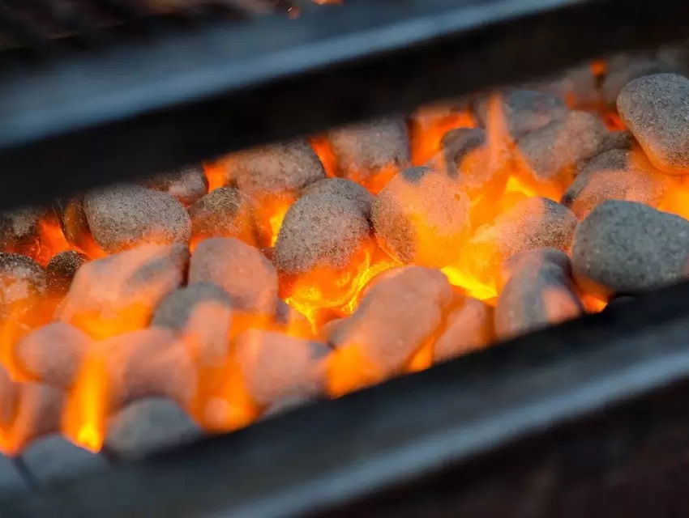
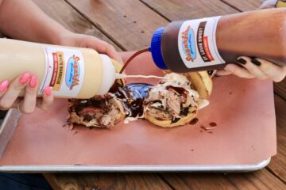
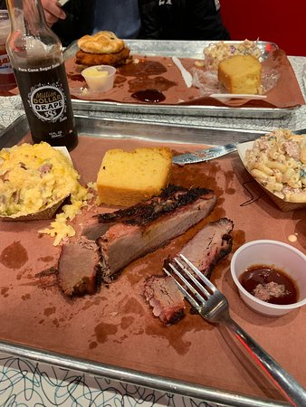

SugarFire Restaurant,
Smoke house babeQue every type meat. Fresh slices hearty Portions
SugarFire Restaurant
Sugar fire is a BBQ smokehouse Restaurant serving specialty meats with a variety of specialty BBQ-sauces, sugarfire will cater, and The specialty Today is the FRIED TOMATO SANDWICH.
Our Specialties
catering and Menu SourcesWebsite-SugarFire
SAUCES
White Bbq, St louis sweet , Carolina Mustard. Also Coffee Bbq, Texas Hot , and Honey Badger.Also Including SugarFire 47.
Free sauces are free with every plate
Fried Tomato
The Green Fried Tomato Sandwich is todays special. fried green tomatoes, cheddar cheese, slaw, carolina mustard bbq drizzle, ranch, on texas toast
17.99
The Big Muddy
The big muddy is also a fan favorite.This bad boy of the brisket sandwich world is served with brisket (of course), smoked sausage, horseradish sauce, BBQ sauce, lettuce, pickles. The perfect sandwich for someone who likes a lot of sandwich.
17.99